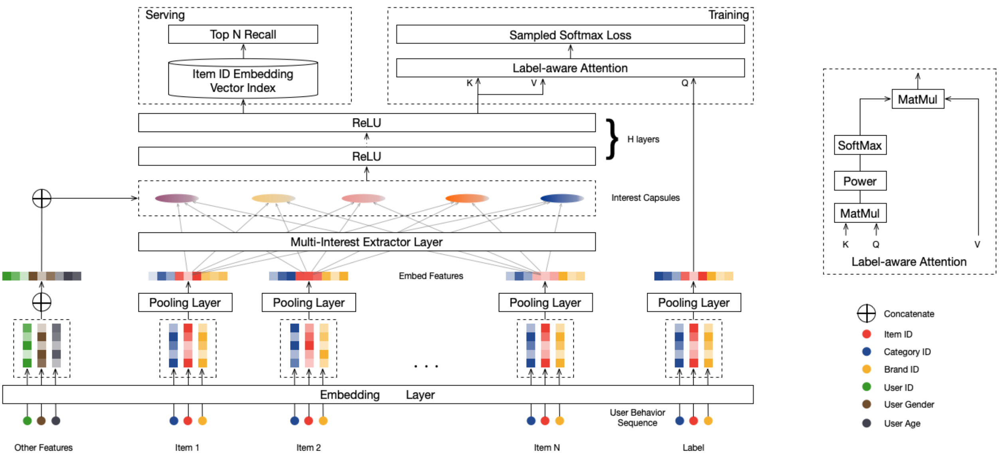

2.4.1. MIND：用多个向量捕捉用户的多元兴趣¶
想象一下，你在淘宝上的购物历史：今天买了一本编程书，昨天买了运动鞋，上周买了咖啡豆。如果推荐系统只用一个数字向量来描述你，就像是用一个标签来概括一个人的全部——显然是不够的。
MIND (Multi-Interest Network with Dynamic Routing) (Li et al., 2019) 模型提出了一个更符合直觉的想法：既然用户有多种兴趣，为什么不用多个向量来分别表示呢？就像给每个兴趣爱好都分配一个专门的“代言人”。
这个模型的巧妙之处在于借鉴了胶囊网络的动态路由思想。简单来说，它会自动把你的行为按照兴趣类型进行分组——编程相关的行为归为一类，运动相关的归为另一类，美食相关的又是一类。每一类都会生成一个专门的兴趣向量，这样推荐系统就能更精准地理解你在不同场景下的需求。
{kind=link}

图2.4.1 MIND模型整体结构¶
从整体架构来看，除了常规的Embedding层，MIND模型还包含了两个重要的组件：多兴趣提取层和Label-Aware注意力层。
2.4.1.1. 多兴趣提取¶
MIND模型的多兴趣提取技术源于对胶囊网络动态路由机制的创新性改进。胶囊网络 (Sabour et al., 2017) 最初在计算机视觉领域被提出，其核心思想是用向量而非标量来表示特征，向量的方向编码属性信息，长度表示存在概率。动态路由则是确定不同层级胶囊之间连接强度的算法，它通过迭代优化的方式实现输入特征的软聚类。这种软聚类机制的优势在于，它不需要预先定义聚类数量或类别边界，而是让数据自然地分组，这正好契合了用户兴趣发现的需求。MIND模型引入了这一思想并提出了行为到兴趣（Behavior to Interest，B2I）动态路由：将用户的历史行为视为行为胶囊，将用户的多重兴趣视为兴趣胶囊，通过动态路由算法将相关的行为聚合到对应的兴趣维度中。MIND模型针对推荐系统的特点对原始动态路由算法进行了三个关键改进：
共享变换矩阵。与原始胶囊网络为每对胶囊使用独立变换矩阵不同，MIND采用共享的双线性映射矩阵 \(S \in \mathbb{R}^{d \times d}\)。这种设计有两个重要考虑：首先，用户行为序列长度变化很大，从几十到几百不等，共享矩阵确保了算法的通用性 ；其次，共享变换保证所有兴趣向量位于同一表示空间，便于后续的相似度计算和检索操作。路由连接强度的计算公式为：
(2.4.1)¶\[b_{ij} = \boldsymbol{u}_j^T \boldsymbol{\textrm{S}} \boldsymbol{e}_i\]其中 \(\boldsymbol{e}_i\) 表示用户历史行为 \(i\) 的物品向量，\(\boldsymbol{u}_j\) 表示第 \(j\) 个兴趣胶囊的向量，\(b_{ij}\) 衡量行为 \(i\) 与兴趣 \(j\) 的关联程度。
随机初始化策略。为避免所有兴趣胶囊收敛到相同状态，算法采用高斯分布随机初始化路由系数 \(b_{ij}\)。这一策略类似于K-Means聚类中的随机中心初始化，确保不同兴趣胶囊能够捕捉用户兴趣的不同方面。
自适应兴趣数量。考虑到不同用户的兴趣复杂度差异很大，MIND引入了动态兴趣数量机制：
(2.4.2)¶\[K_u' = \max(1, \min(K, \log_2 (|\mathcal{I}_u|)))\]其中 \(|\mathcal{I}_u|\) 表示用户 \(u\) 的历史行为数量，\(K\) 是预设的最大兴趣数。这种设计为行为较少的用户节省计算资源，同时为活跃用户提供更丰富的兴趣表示。
改进后的动态路由过程通过迭代方式进行更新。\(b_{ij}\)在第一轮迭代时，初始化为0，在每轮迭代中更新路由系数和兴趣胶囊向量，直到收敛。 公式 （2.3.1）描述了路由系数 \(b_{ij}\) 的更新，但关键的兴趣胶囊向量 \(\boldsymbol{u}_j\) 是通过以下步骤计算的，这本质上是一个软聚类算法：
计算路由权重 : 对于每一个历史行为（低层胶囊 \(i\)），其分配到各个兴趣（高层胶囊 \(j\)）的权重 \(w_{ij}\) 通过对路由系数 \(b_{ij}\) 进行Softmax操作得到。
(2.4.3)¶\[w_{ij} = \frac{\exp{b_{ij}}}{\sum_{k=1}^{K_u'} \exp{b_{ik}}}\]这里的 \(w_{ij}\) 可以理解为行为 \(i\) 属于兴趣 \(j\) 的“软分配”概率。
聚合行为以形成兴趣向量: 每一个兴趣胶囊的初步向量 \(\boldsymbol{z}_j\) 是通过对所有行为向量 \(\boldsymbol{e}_i\) 进行加权求和得到的。每个行为向量在求和前会先经过共享变换矩阵 \(\boldsymbol{S}\) 的转换。
(2.4.4)¶\[\boldsymbol{z}_j = \sum_{i\in \mathcal{I}_u} w_{ij} \boldsymbol{S} \boldsymbol{e}_i\]这一步是聚类的核心：根据刚刚算出的权重，将相关的用户行为聚合起来，形成代表特定兴趣的向量。
非线性压缩 : 为了将向量的模长（长度）约束在 [0, 1) 区间内，同时不改变其方向，模型使用了一个非线性的“squash”函数，从而得到本轮迭代的最终兴趣胶囊向量 \(\boldsymbol{u}_j\)。向量的长度可以被解释为该兴趣存在的概率，而其方向则编码了兴趣的具体属性。
(2.4.5)¶\[\boldsymbol{u}_j = \text{squash}(\boldsymbol{z}_j) = \frac{\left\lVert \boldsymbol{z}_j \right\rVert ^ 2}{1 + \left\lVert \boldsymbol{z}_j \right\rVert ^ 2} \frac{\boldsymbol{z}_j}{\left\lVert \boldsymbol{z}_j \right\rVert}\]更新路由系数 (Updating Routing Logits): 最后，根据新生成的兴趣胶囊 \(\boldsymbol{u}_j\) 和行为向量 \(\boldsymbol{e}_i\) 之间的一致性（通过点积衡量），来更新下一轮迭代的路由系数 \(b_{ij}\)。
(2.4.6)¶\[b_{ij} \leftarrow b_{ij} + \boldsymbol{u}_j^T \boldsymbol{S} \boldsymbol{e}_i\]
以上四个步骤会重复进行固定的次数（通常为3次），最终输出收敛后的兴趣胶囊向量集合 \(\{\boldsymbol{u}_j, j=1,...,K_{u}^\prime\}\) 作为该用户的多兴趣表示。
2.4.1.2. 代码实践¶
MIND的核心在于胶囊网络的动态路由实现。在每次迭代中，模型首先通过softmax计算路由权重，然后通过双线性变换聚合行为向量，最后使用squash函数进行非线性压缩：
# 动态路由的核心循环
for i in range(self.iteration_times): # 通常迭代3次
# 1. 计算路由权重 w_ij
routing_logits_with_padding = tf.where(mask, mask_routing_logits, pad)
weight = tf.nn.softmax(routing_logits_with_padding) # [B, k_max, max_len]
# 2. 通过共享的双线性映射矩阵 S 变换行为嵌入
behavior_embdding_mapping = tf.tensordot(
behavior_embddings, self.bilinear_mapping_matrix, axes=1
) # [B, max_len, out_units]
# 3. 加权聚合形成兴趣胶囊
Z = tf.matmul(weight, behavior_embdding_mapping) # [B, k_max, out_units]
interest_capsules = squash(Z) # 非线性压缩到 [0, 1)
# 4. 更新路由系数：基于兴趣胶囊与行为的一致性
delta_routing_logits = tf.reduce_sum(
tf.matmul(interest_capsules, tf.transpose(behavior_embdding_mapping, perm=[0, 2, 1])),
axis=0, keepdims=True
)
self.routing_logits.assign_add(delta_routing_logits)
这里的squash函数实现了向量长度的非线性压缩，确保输出向量的模长在\([0, 1)\)区间内：
def squash(inputs):
"""非线性压缩函数，将向量长度映射到 [0, 1) 区间"""
vec_squared_norm = tf.reduce_sum(tf.square(inputs), axis=-1, keepdims=True)
scalar_factor = vec_squared_norm / (1 + vec_squared_norm) / tf.sqrt(vec_squared_norm + 1e-9)
return scalar_factor * inputs
标签感知的注意力机制
多兴趣提取层生成了用户的多个兴趣向量，但在训练阶段，我们需要确定哪个兴趣向量与当前的目标商品最相关。因为在训练时，我们拥有‘正确答案’（即用户实际点击的下一个商品），所以可以利用这个‘标签’信息，来反向监督模型，让模型学会在多个兴趣向量中，挑出与正确答案最相关的那一个。这相当于在训练阶段给模型一个明确的指引。MIND模型设计了标签感知注意力层来解决这个问题。
该注意力机制以目标商品向量作为查询，以用户的多个兴趣向量作为键和值。具体计算过程如下：
其中\(V_u = (v_u^1, \ldots, v_u^K)\)表示用户的兴趣胶囊矩阵，通过将兴趣胶囊向量\(\boldsymbol{u}\)与用户画像Embedding进行拼接，再经过多层ReLU变换得到 （见 图2.4.1 ）。\(e_i\)是目标商品\(i\)的Embedding向量，\(p\)是控制注意力集中度的超参数。
参数\(p\)控制注意力分布：当\(p\)接近0时，所有兴趣向量获得均等关注；随着\(p\)增大，注意力逐渐集中于与目标商品最相似的兴趣向量；当\(p\)趋于无穷时，机制退化为硬注意力，只选择相似度最高的兴趣向量。实验表明，使用较大的\(p\)值能够加快模型收敛速度。
通过标签感知得到用户向量\(v_u\)后，MIND模型的训练目标就是让用户向量与其真实交互的商品尽可能“匹配”。具体来说，模型会最大化用户与正样本商品的相似度，同时最小化与负样本的相似度。由于商品库通常非常庞大，直接计算所有商品的概率分布在计算上不现实，因此MIND采用了和YouTubeDNN相同的策略——使用Sampled Softmax损失函数，通过随机采样一小部分负样本来近似全局的归一化计算。
标签感知注意力的实现比较直观，核心是使用目标商品向量作为查询，计算与各个兴趣向量的相似度：
def call(self, inputs, training=None, **kwargs):
keys = inputs[0] # 多个兴趣胶囊向量 [batch_size, k_max, dim]
query = inputs[1] # 目标商品向量 [batch_size, dim]
# 计算每个兴趣向量与目标商品的相似度
weight = tf.reduce_sum(keys * query, axis=-1, keepdims=True) # [batch_size, k_max, 1]
# 通过幂次运算控制注意力集中度
weight = tf.pow(weight, self.pow_p)
# 如果 pow_p 很大（>= 100），直接选择最相似的兴趣
if self.pow_p >= 100:
idx = tf.argmax(weight, axis=1, output_type=tf.int32)
output = tf.gather_nd(keys, idx)
else:
# 否则使用 softmax 进行加权聚合
weight = tf.nn.softmax(weight, axis=1)
output = tf.reduce_sum(keys * weight, axis=1) # [batch_size, dim]
return output
下面训练MIND并评估召回效果。
from funrec import run_experiment
run_experiment('mind')